LLM Safety & Alignment
Auditing and repairing the safety of fine-tuned language models: measuring how alignment drifts during fine-tuning, and restoring it without giving up task performance.
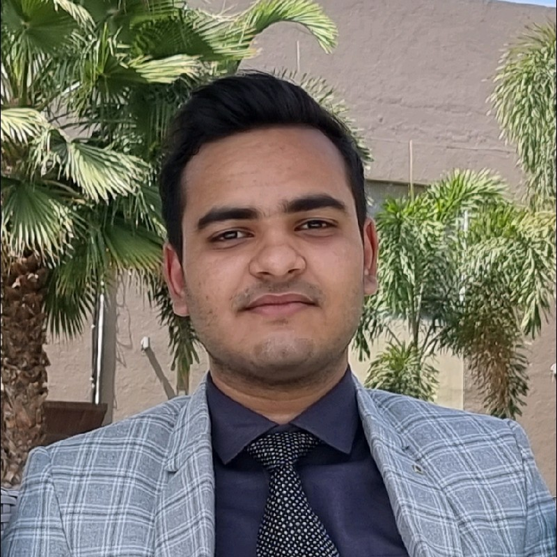
AI Researcher · M.Tech. Artificial Intelligence, IIT Patna
Hello! 👋 I study how large models work on the inside and how to keep them safe. My research covers LLM safety, mechanistic interpretability, multimodal learning and computer vision.
Across five research internships at Lexsi Labs, IIT Jodhpur, the National Astronomical Observatory of Japan, IISER Bhopal and IIIT Allahabad, I have co-authored six papers at venues including EMNLP, BMVC, The Astrophysical Journal and a NeurIPS workshop. Most recently I built SAFETUNE, a framework for auditing and repairing safety drift in fine-tuned LLMs.
If you share these interests, I'd love to talk and collaborate. 😉
Auditing and repairing the safety of fine-tuned language models: measuring how alignment drifts during fine-tuning, and restoring it without giving up task performance.
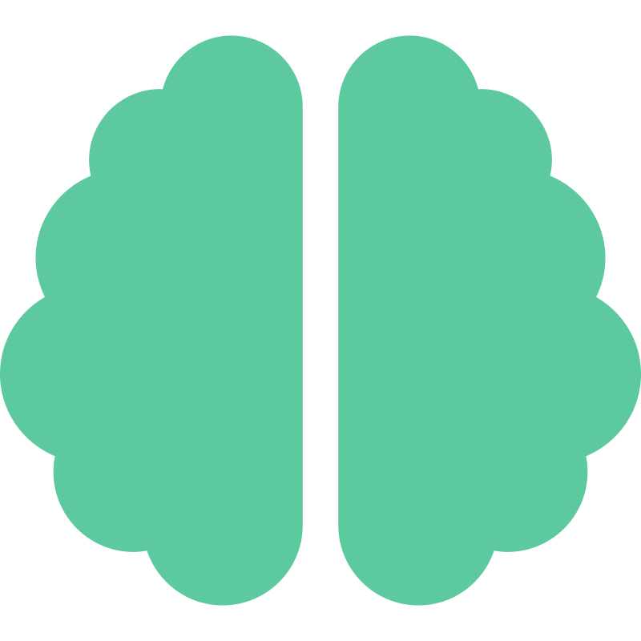
Reverse-engineering model internals through safety-circuit discovery, steering vectors and representation analysis, with a focus on multilingual LLM safety.
Data-efficient image–text representation learning, such as pairing self-supervised vision encoders like DINOv2 with CLIP-style objectives for multimodal LLMs.
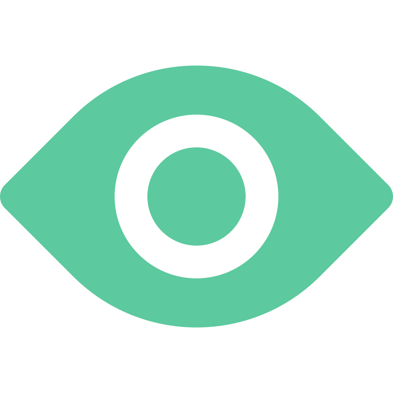
Efficient medical image segmentation, state-space vision models (Mamba), uncertainty-aware architectures and explainable AI for visual recognition.
M.Tech., Artificial Intelligence
B.E., Computer Science & Engineering · CGPA 9.07 / 10
Research Intern: Mechanistic Interpretability and Safety in LLMs
ACM IKDD Scholar: Self-Supervised Vision and Multimodal Learning
Research Intern: Sparse Signal Reconstruction
Research Intern: Medical Image Segmentation · Guide: Prof. Vinod K. Kurmi
Research Intern: Emotion Classification using EEG · Guides: Prof. Uma Shankar Tiwary & Prof. Mohammad Asif
NeurIPS 2026 FLLMPT Workshop
EMNLP 2026, System Demonstrations Track
British Machine Vision Conference (BMVC) 2025
Journal of High Energy Astrophysics
The Astrophysical Journal
ICCCNT 2024
Full list on Google Scholar.
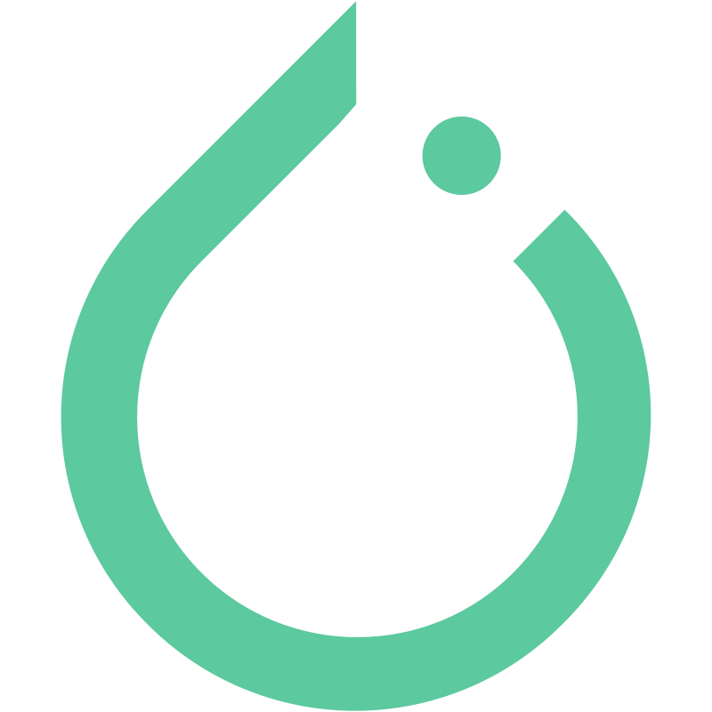
PyTorch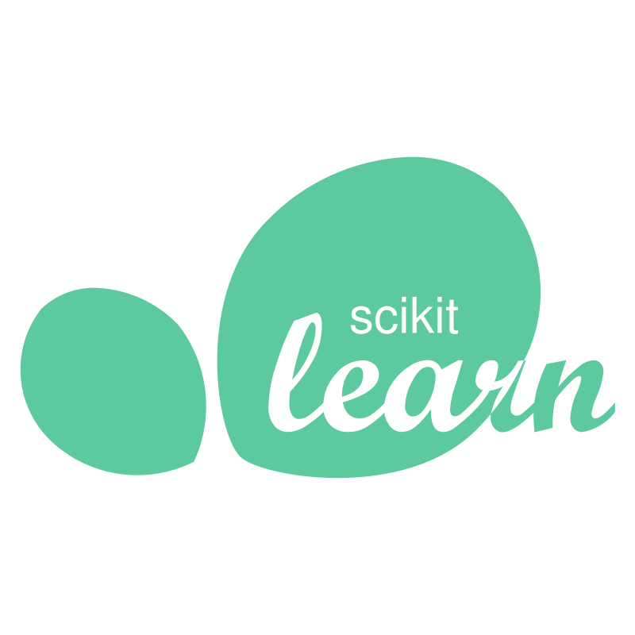
Scikit-learn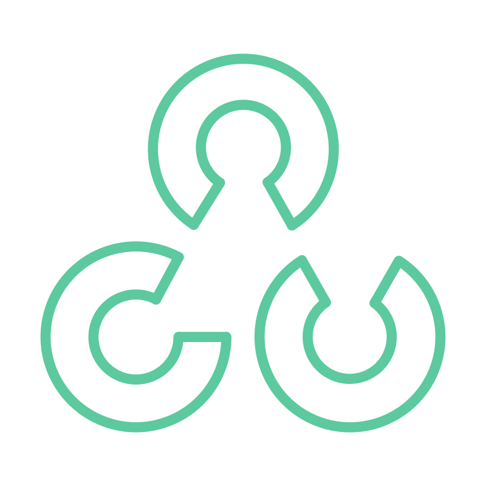
OpenCV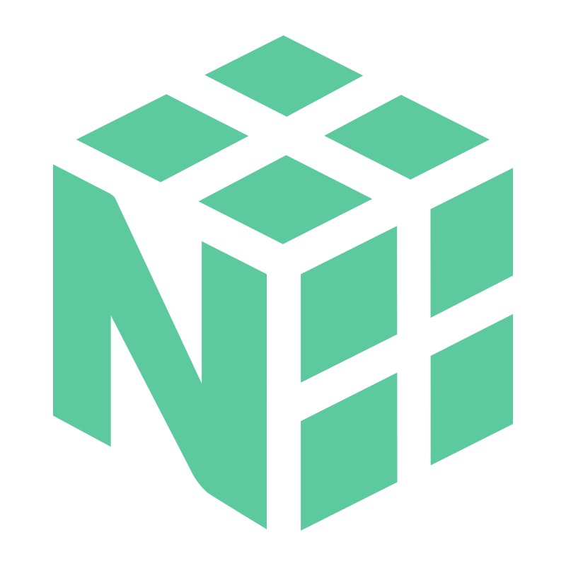
NumPy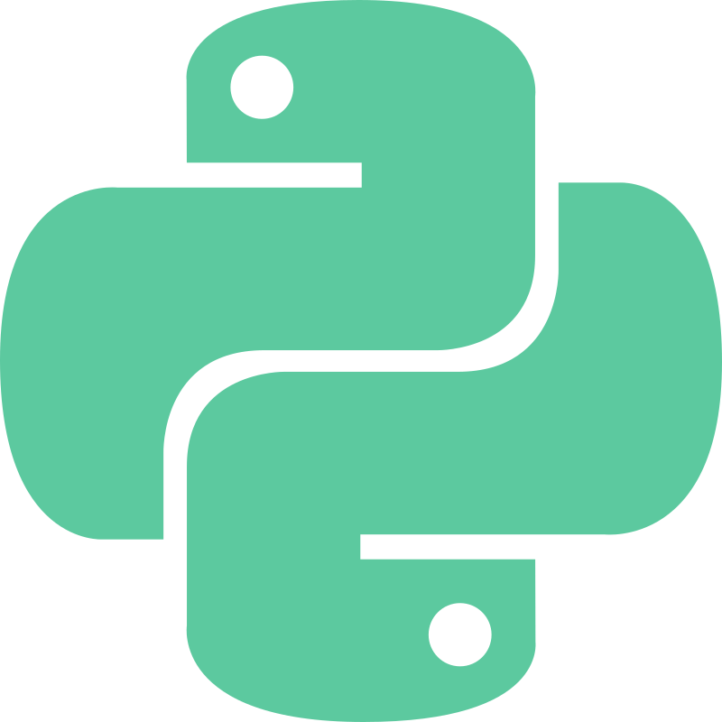
Python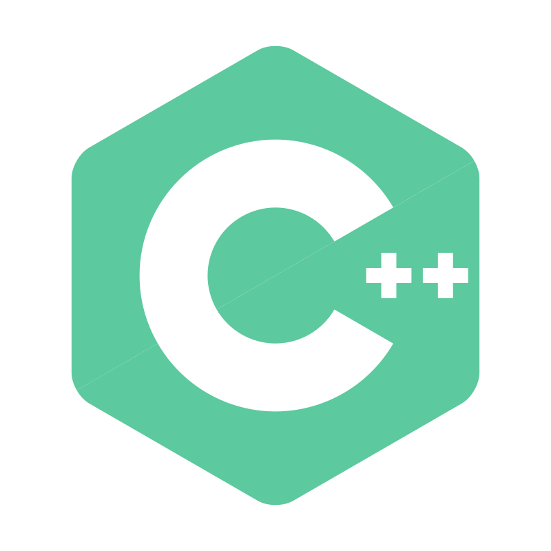
C / C++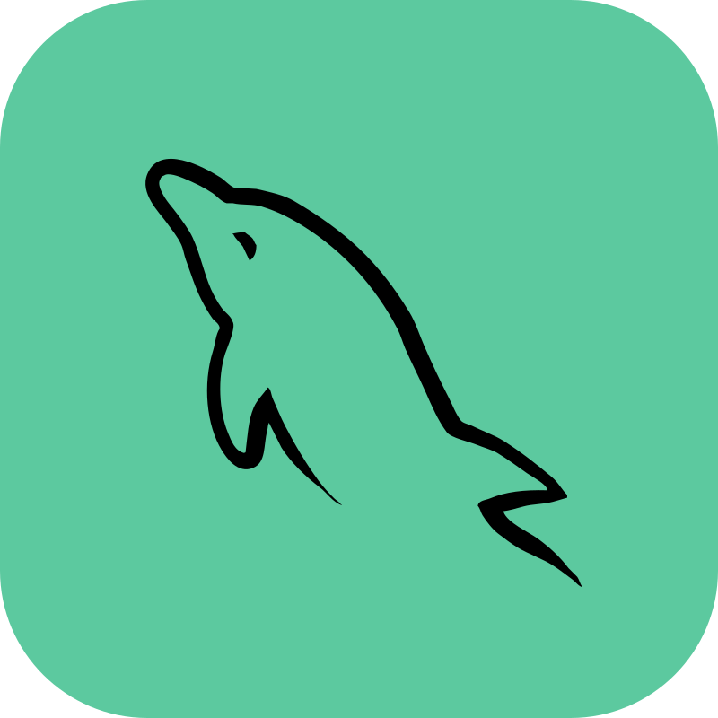
SQL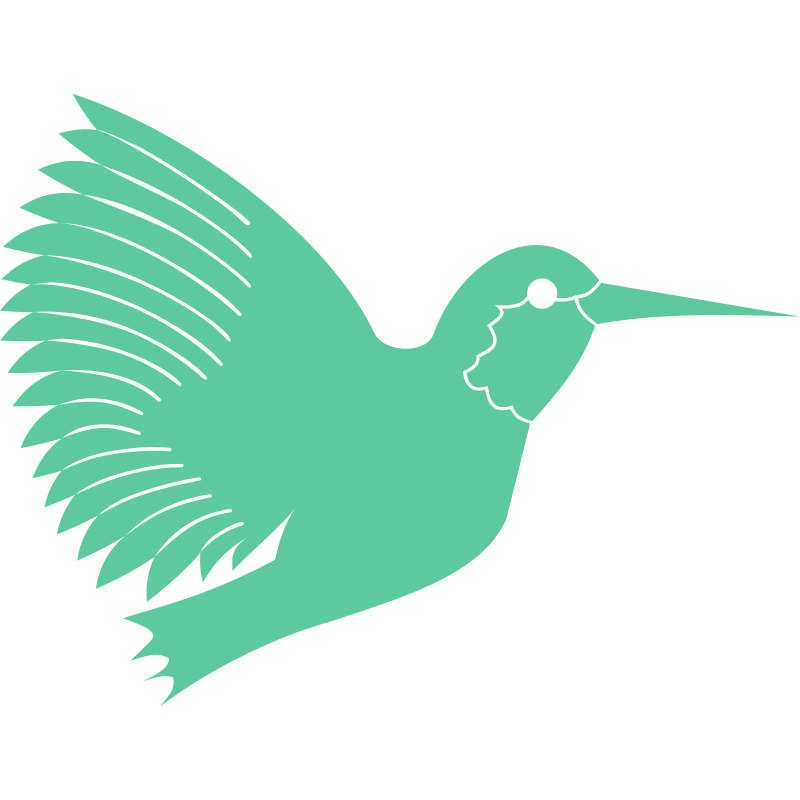
LaTeXOpen to research collaborations and conversations about AI safety and interpretability.